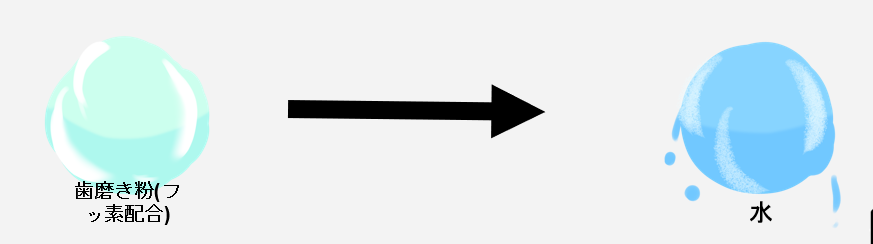

シャカシャカしゅーてぃんぐ（チーム制作）

1. 作品概要
歯磨き粉と水で次々に来る患者の歯をきれいにしていくシューティングゲームです。
制限時間内により多くの患者の歯を磨くことが目標です。
2. 成果
- デプロイ先
- デモ動画
3. 開発背景
2021/09/18~2021/09/20 に行われたハッカソン型インターンシップで、3 人 1 組で作成したゲームです。
4. 操作方法
- 左クリック：歯磨き粉
- 右クリック or LShift + 左クリック：水
汚れている歯には二段階のターゲットが設定されていて、歯磨き粉を当てたあとに水を当てる必要があります。

5. 開発期間
2021/09/18~2021/09/20 の 3 日間
6. 開発環境
Unity（WebGL）
7. 開発メンバーと担当範囲
3 人で開発しました。
私の担当範囲は以下のとおりです。主にアウトゲーム部分の実装を担当しています。
- 機能の結合
- UI デザイン・実装
- タイマー
- プレイヤー入力
- 一部イラストの描き下ろし
8. ポイント
シンプルな操作・要素
左右のクリックの押し分けのみで操作が完結していて、すぐにゲームに慣れることができます。
各アクションごとにしっかりとフィードバックがある
弾の発射では、音のフィードバックがあります。
顔の切り替わりでは、磨いた歯に応じた評価とエフェクトが表示されます。